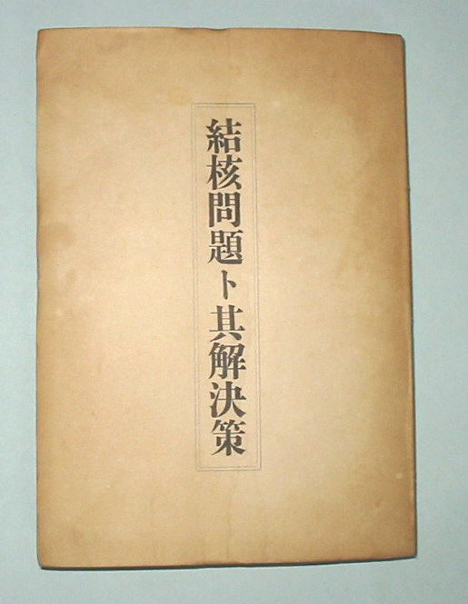
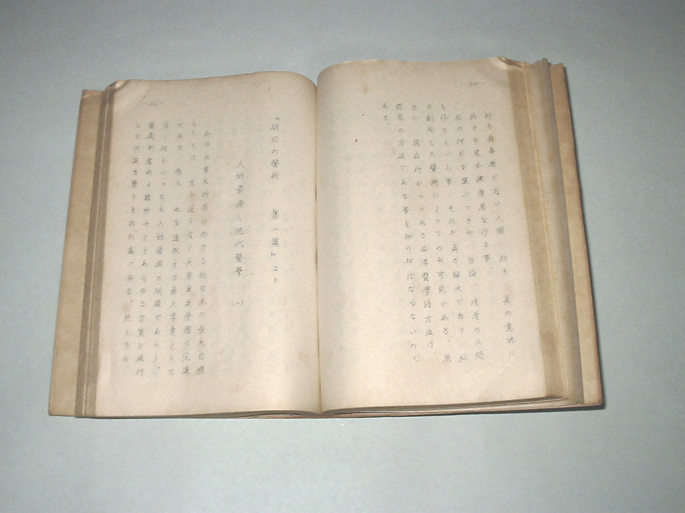
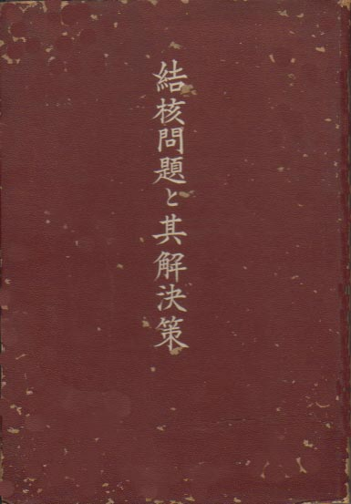
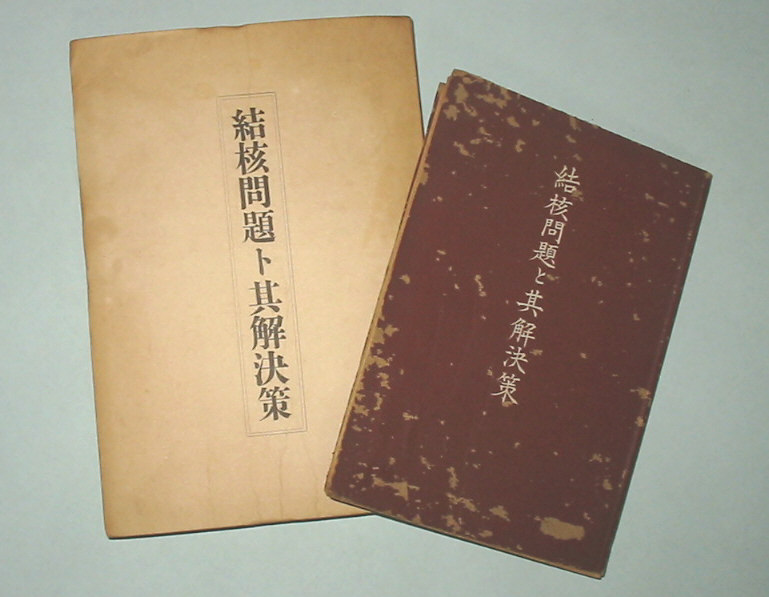

――― 岡
田 自 観 師 の 論 文 集 ――発行誌別
結核問題ト其解決策
『明日の医術』初版中より、結核に関する所説を抜粋したもの。
 |
結核問題ト其解決策（初版） 昭和17年12月13日発行 謄写版、和紙、袋とじ A５版、133丁、265頁 非売品 著者 岡田 茂吉 印刷者 原 清作 発行所 坂井商事出版部 |
 |
|
和紙は流石に痛みがほとんど感じられない |
|
 |
結核問題と其解決策（再版） 昭和18年5月5日発行 Ｂ６版 181P 定価二円 著者 岡田 茂吉 発行者 志保澤 武 印刷所 熊谷印刷所 昭和19年2月発行禁止処分 |
 |
|